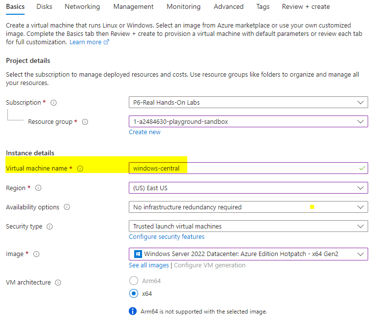
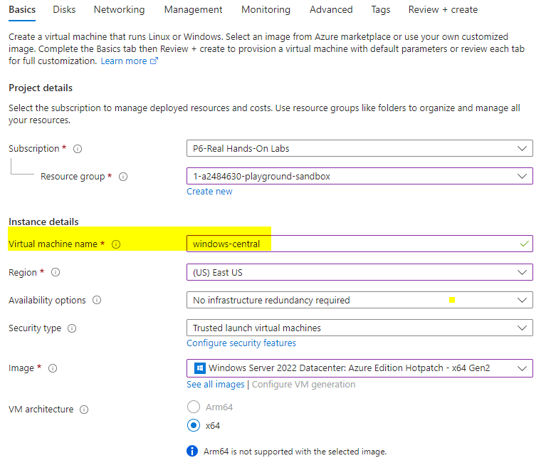
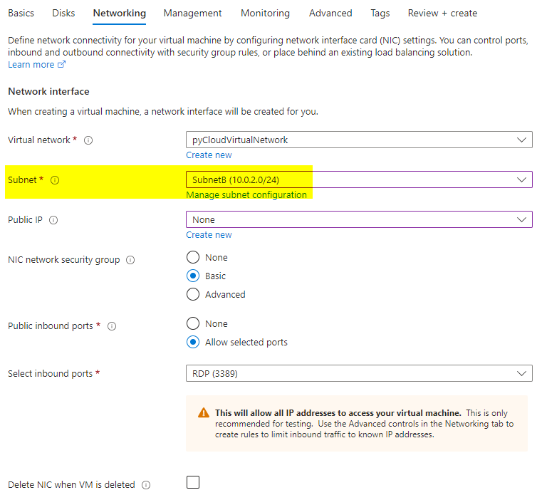
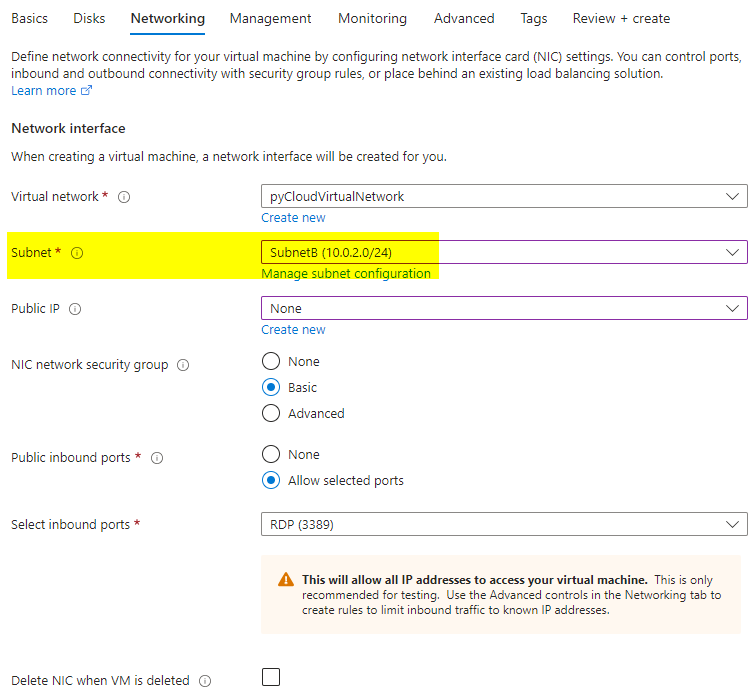
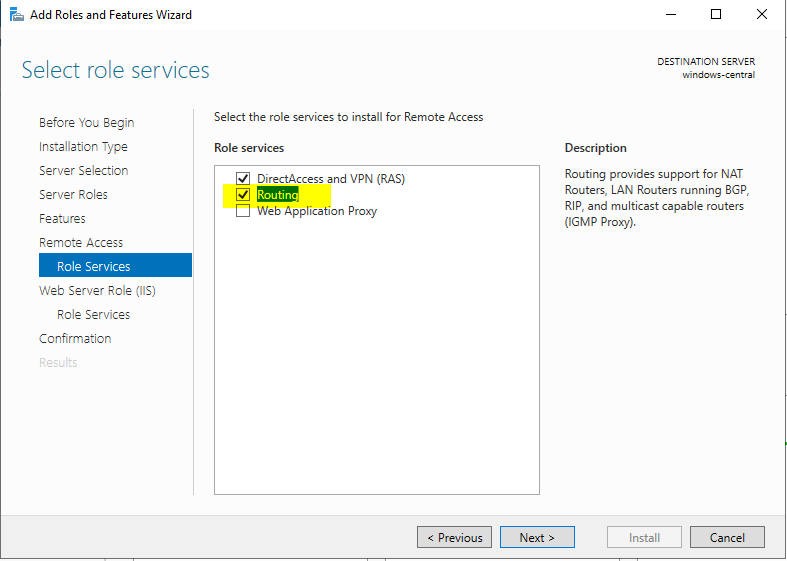
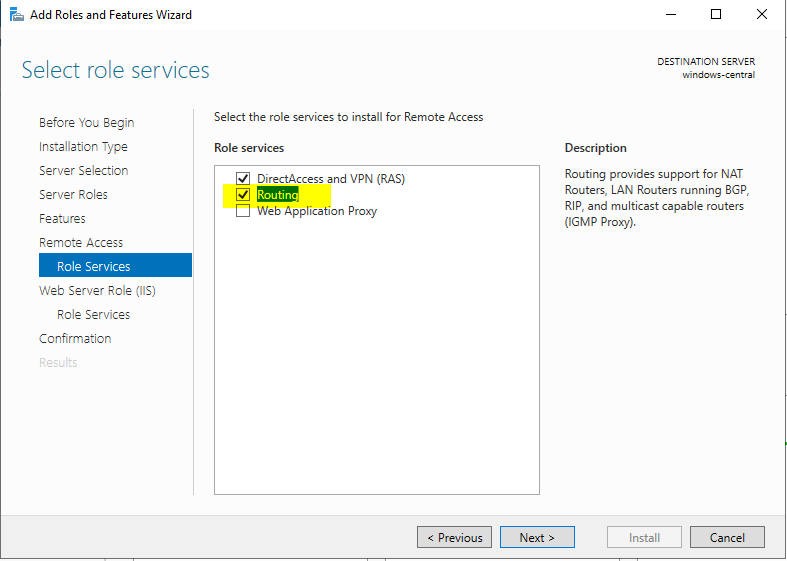

User Defined Routes

Virtual WAN
Step 1: Create Virtual Network with 3 subnets


Step 2: Create VM's in each Subnet
- subnetA and SubnetB virtual machines should not have the public IP Address


 


 

Step 3: Create Route Table in Azure.
- Route all the traffic of the Virtual Network to the windowsCentral
Step 4: Associate the Route Table to the subnet
- Associate the Route Table to the subnetA and SubnetB
- now any traffic starting from SubnetA and SubnetB will first go the windowsCentral


Step 5: Enable IP Forwarding at azure level

Step 6: Login to WindowsCentral and enable Windows Routing at OS level


 
